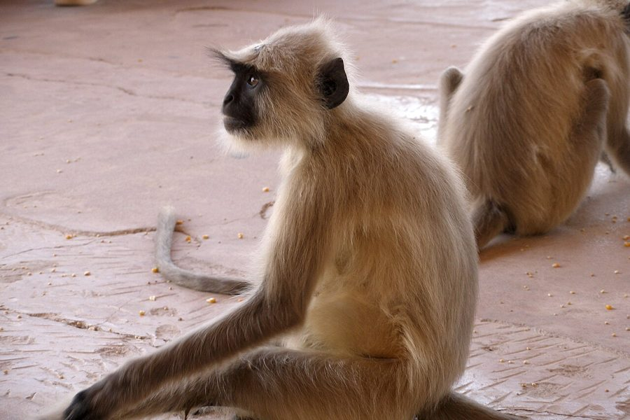

लंगूरNorthern Plains Grey Langur
Semnopithecus entellus · Cercopithecidae · MAM-0020

- Scientific name
- Semnopithecus entellus (Dufresne, 1797)
- Family
- Cercopithecidae
- Hindi
- लंगूर
- Local names
- langur, langoor, hanuman langur, hanuman bandar, kala muh bandar
- Status here
- native
- IUCN
- LC
- Review
- audited and independently read
When to look कब देखें
Present all year.
Uses and possibilities उपयोग और संभावनाएँ
Drawn from the documented uses in the profile below, where each is labelled traditional, current or a research lead. All uses →
लंगूर / Northern Plains Grey Langur
Semnopithecus entellus (Dufresne, 1797) — Cercopithecidae
लंगूर (हनुमान) — गाँव के पेड़ों पर, मंदिरों में और घरों की छतों पर दिखने वाला एक बड़ा, लंबी पूँछ वाला, भूरे-काले रंग का बंदर। लंबा और पतला शरीर, लंबी दुम जो संतुलन में मदद करती है, और हल्के रंग का चेहरा। समूहों में रहता है, दिन भर पेड़ों पर कूदता और फल, पत्तियाँ खाता है। हिंदुओं के लिए यह हनुमान का रूप है, और लोग इसे पवित्र मानते हैं, इसीलिए इसे नुकसान नहीं पहुँचाते। पर कभी-कभी फसलों को नुकसान पहुँचाता है। भारतीय वन्यजीव संरक्षण अधिनियम 1972 की अनुसूची II में सूचीबद्ध और सुरक्षित।
Quick Identification त्वरित पहचान
| Feature | Description |
|---|---|
| Size | Head-body 51–76 cm; tail 64–99 cm (often longer than body); weight 11–18 kg |
| Colour | Greyish-brown to silvery-grey dorsum; black face, hands, and feet; lighter ventral surface |
| Face | Black, hairless; large round eyes; prominent brow ridge |
| Tail | Very long, thin, and prehensile; used for balance in trees and occasionally for hanging |
| Ears | Medium, rounded |
| Limbs | Long and slender; adapted for arboreal locomotion |
| Behaviour | Diurnal; gregarious (groups of 10–30); loud calls; agile acrobat in trees |
Field tip: A large grey monkey with a black face, very long tail, and white/cream coloured ventral surface. Often seen in noisy groups leaping between trees and along rooftops. The long tail is distinctive. Completely harmless unless provoked.
हिंदी — कैसे पहचानें: बड़ा, भूरा-काला, बहुत लंबी पूँछ, काला चेहरा, पेड़ों पर कूदता है। शोर मचाता है। समूह में रहता है।
Morphology आकारिकी
Biometrics (typical measurements for northern Indian populations):
| Measurement | Range |
|---|---|
| Head-body length | 51–76 cm |
| Tail length | 64–99 cm |
| Weight | 11–18 kg (males larger) |
Pelage: The dorsal surface is greyish-brown to silvery-grey; the ventral surface (belly, inner limbs) is lighter cream or white. Guard hairs are longer, giving the coat a somewhat rough texture.
Face: Hairless and black; framed by slightly longer hairs on the crown. Large dark eyes with a prominent brow ridge. The facial expression is alert and somewhat dignified.
Tail: Very long, thin, and lightly furred. Prehensile, used constantly for balance in trees, occasionally for hanging. The tail is a key character—longer than the body in most individuals.
Hands and feet: Black, with a naked palm and sole. The thumb is opposable; the foot has five toes. The grip is strong, allowing secure holding of branches and food.
Sexual dimorphism: Males are considerably larger than females; adult males weigh up to 18 kg, while females average 12 kg.
Behaviour & Ecology व्यवहार और पारिस्थितिकता
A highly gregarious arboreal primate, living in troops of 10–30 individuals with a dominance hierarchy of both sexes. The group occupies a large home range (1–4 km²) which it defends loosely from neighbouring groups through loud long-distance vocalizations.
Diet: Primarily frugivorous (fruit-eating), preferring ripe fruits of mango, neem, and fig trees. Also browses young leaves, flowers, and occasionally insects. It is selective and will strip mature leaves and fruits from trees, which can damage fruit crops.
Daily activity: Active during daylight hours, resting and foraging in a predictable pattern. Early morning is spent on the ground near sleeping trees, gradually moving up into the canopy as day progresses. The troop moves as a unit, with constant communication via calls and alarm signals.
Vocalizations: Loud and varied; the troop is often announced by its calls before being seen. The alarm call is a distinctive loud bark that alerts the group to the presence of a threat (predator or human). Calls are also used to maintain group cohesion and for territorial advertisement.
Sleeping sites: The troop returns to preferred high trees at dusk for the night. Individual members huddle together for warmth.
Predators: Leopards (historic, now rare), and occasionally raptors (for juveniles). Humans (historically, now less due to sacred status).
Life Cycle / Phenology जीवन चक्र
| Stage / Event | Timing |
|---|---|
| Sexual maturity | Females 4–5 years; males 5–6 years |
| Breeding | No strict season; births peak in spring and monsoon |
| Gestation | 7 months |
| Birth | Single infant, rarely twins |
| Weaning | 12–18 months; mothers maintain care to 2–3 years |
| Juvenile dependence | 3–4 years in the troop |
| Lifespan | 20+ years in the wild |
Host Plants or Prey आहार
- Mango fruit (preferred when ripe)
- Neem leaves and fruit
- Fig fruit
- Sal seeds
- Acacia pods
- Young leaves of various trees
- Flowers (seasonal)
- Insects and their larvae (occasionally)
- Human cultivated crops (when raiding): wheat, maize, sugarcane
Predators / Natural Enemies शत्रु
- Historically: Leopard (Panthera pardus)
- Currently: Humans (though protected); historical hunting for skins and organs
- Infants: Large raptors (eagles, kites); cannibalism by rival males in some species contexts
- No current major predators due to rarity of large carnivores and protected status
Agricultural / Human Relevance कृषि प्रासंगिकता
Crop raiding: While generally herbivorous and fruit-eating, groups occasionally raid ripening fruit crops (mango, papaya) and standing wheat or maize fields. Damage is localized and seasonal but can be significant in areas with large populations.
Conservation status: Protected under Schedule II of the Wildlife (Protection) Act, 1972. The species is Least Concern globally due to its wide range and relatively high populations across the Indian subcontinent.
Religious and cultural significance: The Northern Plains Grey Langur is strongly associated with Hanuman (the monkey god) in Hindu tradition and is widely revered. This cultural protection has been more effective at preventing hunting than legal protections alone. The species is informally protected in many villages where it is fed and sheltered.
Human conflict: Occasionally enters buildings and raids stored food. Some agricultural communities tolerate crop loss in exchange for the animal's sacred status.
Today: Populations are stable across the range. The species thrives in human-dominated landscapes (villages, towns, orchards) and benefits from temple gardens and fruit trees. No significant decline is documented in recent decades.
Expected Locally स्थानীय रूप से अपेक्षित
Not a field record. Written from published accounts for eastern Uttar Pradesh. No confirmed local sighting yet — if you have seen it, that is what the atlas needs.
अभी तक स्थानीय पुष्टि नहीं। यह विवरण प्रकाशित स्रोतों से है, किसी अवलोकन से नहीं।
Expected in mango and neem groves, temples, villages with scattered trees, and riparian forest margins across Basti and Ayodhya districts. Troops are most visible in the early morning (5–8 AM) and late afternoon (4–6 PM) during their active foraging periods. Local knowledge of troop locations is good, and the loud vocalizations make presence obvious.
Distribution वितरण
Global range: The Indian subcontinent: India, Nepal, Bangladesh, and Bhutan.
In India: Widespread across the peninsula and the Gangetic plains, from the foothills to the dry regions of Rajasthan and Gujarat.
In Uttar Pradesh: Common throughout, particularly in villages, orchards, and temple complexes.
In Basti district / eastern UP: Common in all blocks with tree cover; particularly abundant around temples and village groves.
Research Questions शोध प्रश्न
Anyone can investigate these | कोई भी इन प्रश्नों की जाँच कर सकता है
- How many langur troops are in the district, and what is the size of each? / जिले में कितने लंगूर के झुंड हैं, और हर झुंड में कितने लंगूर? — Survey villages with known troops; count individuals.
- What are the preferred food trees for each season? / हर मौसम में लंगूर के पसंदीदा भोजन पेड़ कौन हैं? — Follow a troop and note feeding choices.
- How much crop loss occurs annually due to langur raiding in villages? / लंगूरों के कारण सालाना कितना नुकसान होता है? — Interview farmers; estimate yield losses.
- Do langurs in temple areas have different behavior or diet than those in villages? / मंदिरों और गाँवों में लंगूरों का व्यवहार अलग है क्या? — Compare observations from two sites.
- What vocalizations are used for alarm, group cohesion, and territorial advertisement? — Record calls and document behavioral contexts.
Similar Species मिलती-जुलती प्रजातियाँ
| Species | How to tell apart | हिंदी |
|---|---|---|
| Bonnet Macaque (Macaca radiata) — if any present in eastern UP | Stockier build; shorter tail; no long silvery guard hairs; different facial structure | मोटा, छोटी पूँछ |
| Common Chimpanzee (Pan troglodytes) — not present in India; included for reference | Much larger; no tail; knuckle-walking; almost never in India | नहीं दिखेगा भारत में |
| Feral dog | Quadrupedal; shorter tail; different social structure; different vocalizations | कुत्ता |
Field rule: A large grey monkey with a very long thin tail, black face and hands, living in noisy groups in trees is a Northern Plains Grey Langur.
Taxonomy & Classification वर्गीकरण
Original description. Described by Alfred Dufresne in 1797. Northern Indian populations are the nominate subspecies Semnopithecus entellus entellus.
Subspecies. Three subspecies are currently recognized; the northern plains form (S. e. entellus) occurs in Uttar Pradesh.
Family and order placement. Cercopithecidae, the family of Old World monkeys; order Primates, class Mammalia.
Phylogenetic notes. Semnopithecus is a genus of Asian leaf monkeys, closely related to Presbytis and Trachypithecus. The genus is distinct from the macaques (Macaca).
IUCN status rationale. Least Concern. Extremely widespread and stable populations due to protection and cultural reverence.
Photo Gallery फोटो गैलरी
Photos needed आवश्यक फोटो
- [ ] Group of langurs in a tree (पेड़ पर झुंड)
- [ ] Individual showing long tail and black face (लंबी पूँछ और चेहरा)
- [ ] Group on a rooftop or temple (छत या मंदिर पर)
No photos yet — add field photos to media/species/grey_langur/ and run node scripts/sync_photos.js.
Atlas Connections संबंधित प्रजातियाँ
- Mango — primary fruit food in the district
- Neem — another major food tree
- temple — cultural habitat and protection site
- Barn Owl — predator relationship (historical, now rare)
References संदर्भ
- Dufresne, A. (1797). Natural history description — Presbytes entellus. [original description]
- Pocock, R.I. (1939). The Fauna of British India, including Ceylon and Burma. Mammalia, vol. 1 (2nd ed.). Taylor and Francis, London.
- Napier, J.R. & Napier, P.H. (1967). A Handbook of Living Primates. Academic Press, London.
- Stanford, C.B. (1991). The diet of the capped langur (Presbytis pileata) in northeastern Bangladesh. International Journal of Primatology, 12(3), 199–216. [dietary ecology method applicable to Semnopithecus]
- Wolfheim, J.H. (1983). Primates of the World. University of Washington Press, Seattle.
- GBIF Occurrence Data — Semnopithecus entellus, India (2026).
Source file: species/fauna/mammals/grey_langur.md